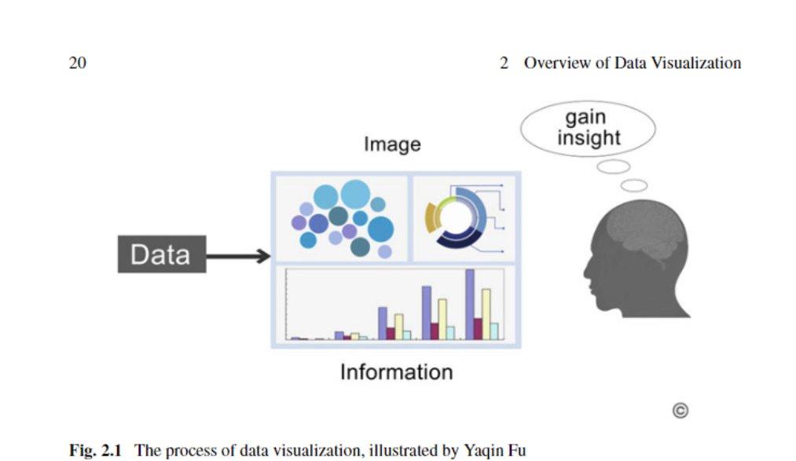

A reflection on ‘’The Overview of Data Visualization”
Along other concepts related, the book explores Data Visualization which is the use of visuals to present data. Data visualization is not a new concept, this practice has been around before computers. Before computer graphics and computer generated images, data was presented through hand drawings.
The book though focuses more on data visualization that makes understanding data easier as oppose to the traditional data visualization with different approaches. Understanding data easier is one of the benefits of data visualization and why data visualization is a good tool for humans. ‘The design of data visualization requires data in an effective and efficient form’ (Qi Li, 2020). This is why there are concepts like visual learning that we benefit from in our early stages of learning for example toddlers at crèche.
Data visualization can be divided into two sub-fields such as information visualization and scientific visualization. Information visualization is visually presenting abstract data while scientific visualization is often data presented physically for example the environment or human body. They both serve the same purpose, to help gain insight and knowledge.
I noticed that the paper itself made use of visuals such as illustrations to explain concepts and help readers understand, specifically figure 2.1 that demonstrates the process of data visualization. There is a black bar labelled as data, next to it is an arrow that points to an image containing bar graphs and diagrams, finally another arrow that points to a human figure labelled as ‘gain insight’. That is the process of data visualization, specifically information visualization.
As mentioned above examples of Information visualization include bar graphs, diagrams, charts, tables and etc. While examples of Scientific visualization include simulations and waveforms to name a few.
There are characteristics of data visualization or things to consider when creating visual data to ensure good insight. These characteristics include readability, meaning and recognizability. The visual presentation needs to be readable, if there are any visual descriptions such as the labels on Figure 2.1, they need to be eligible. Secondly recognizability. I was quick to recognize the human figure on Figure 2.1, the silhouette is recognizable and lastly with all the pieces off data put together there is meaning. I understand the message conveyed.
This example leads me to the last discussion on the paper. Data Visualization and Human perception. I strongly agree that human perception plays a role in data visualization. Theories were discussed such as Feature Integration Theory, Texton Theory, Similarity Theory, and Guided Search Theory. As mentioned before I strongly agreed with human perception playing a role in data visualization, specifically the Feature Integration Theory. It suggests that people process features separately and identify them during a pre-attentive stage, attention is then used afterwards to combine the features and formulate a meaning. I tested this out myself with an experiment on YouTube and I was able to identify feature targets easily regardless of the amount of distractors.
